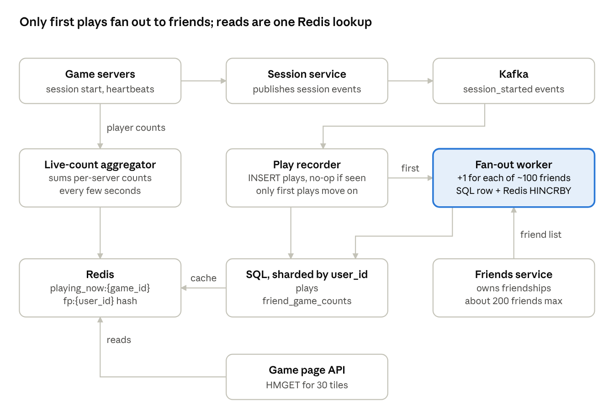

Understanding the problem
On a game's page, Roblox shows social proof: "12 of your friends have played this", and "48,201 playing now". The first number is personal (it depends on who you are friends with); the second is global. Assume 10M users and 100K games. The core problem is fan-out: when one player starts a game, that fact matters to every one of their friends.
Functional requirements
Core:
For a (user, game) pair, show how many of the user's friends have ever played that game (optionally, a few of their names).
For a game, show how many people are playing it right now.
Both update in near real time (seconds, not hours).
Below the line: "friends playing right now" with join buttons, recommendations, privacy settings beyond a simple opt-out, the friendship service itself.
Non-functional requirements
Read-heavy: every game page view and every game tile in the home feed needs these numbers. Assume ~200K reads/s, with a home page showing ~30 game tiles at once.
Write volume: play events. Assume 10M users, and at peak ~1M concurrent players, starting ~20K sessions/s.
Freshness: within a few seconds to a minute is fine. Counts can be slightly stale; they must never be wildly wrong.
Hot keys: a top game has millions of players, and its playing-now counter is updated constantly.
Average ~100 friends per user, with some at the 200+ friend cap. Say these numbers; they drive the fan-out math.
The set-up
Core entities
Friendship: (user_a, user_b), owned by the friends service. We read it.
PlayRecord: user U has played game G (first played at, last played at).
Session: user U is in game G right now (from the game servers' heartbeats).
Counts: friends-played count per (user, game); playing-now count per game.
API
GET /games/{game_id}/social?user=me
→ { "friends_played": 12, "sample_friends": ["u_9", "u_31", "u_4"], "playing_now": 48201 }
POST /games/social:batchGet { "game_ids": [… 30 ids …] } // the home page's game tilesPlay events don't come through a public API. Game servers already report session start, heartbeat and end to an internal session service, which publishes them to Kafka.
High-level design
1. Record who has played what
The session service publishes session_started (user_id, game_id, at) to Kafka. A play recorder consumer writes the first play:
CREATE TABLE plays (
user_id BIGINT, game_id BIGINT, first_played_at TIMESTAMP,
PRIMARY KEY (user_id, game_id) -- shard by user_id
);
INSERT INTO plays VALUES (?, ?, ?) ON CONFLICT DO NOTHING; -- 1 row = a FIRST playMost sessions are repeat plays and change nothing. Only a first play (1 row inserted) matters for "friends who have played", and those are far rarer: assume ~2K/s.
2. Friends-played count, precomputed (fan-out on write)
When U plays G for the first time, the recorder emits first_play (U, G). A fan-out worker looks up U's friends (~100) and, for each friend F, increments F's count for G:
CREATE TABLE friend_game_counts (
user_id BIGINT, game_id BIGINT, friends_played INT,
PRIMARY KEY (user_id, game_id) -- shard by user_id: one user's counts live together
);and in Redis, a hash per user: HINCRBY fp:{friend_id} {game_id} 1.
That's ~2K first plays/s × 100 friends ≈ 200K small increments/s, spread evenly across users. It's very manageable, and it makes reads trivial.
3. Read the friends count
One game page: HGET fp:{user_id} {game_id}. The home page's 30 tiles: one HMGET fp:{user_id} g1 … g30, a single round trip to a single Redis node. On a miss, read friend_game_counts WHERE user_id = ? from the user's one SQL shard and refill the hash. For "sample friends" (a few names), intersect the user's friend list with the plays table only for the one game page being viewed, not for every tile.
4. Playing-now count
Each game server already sends a heartbeat every ~10 seconds; add its current player count. A live-count aggregator keeps, per game, the latest count from each server and sums them:
live:{game_id}→ a Redis hash ofserver_id → players, each field written by the server's heartbeat; servers whose heartbeat stops are dropped after ~30 s.Every few seconds, the aggregator writes the total to
playing_now:{game_id}.
Reads are GET playing_now:{game_id} (or MGET for 30 tiles).
Potential deep dives
1. Fan-out on read vs on write
Bad solution: compute everything at read time. For each tile, get the user's ~100 friends and check whether each played the game (SISMEMBER played:{friend_id} {game_id}). Per home page: 30 tiles × 100 friends = 3,000 lookups. At ~7K home page loads/s that's ~20M lookups/s, which is far too many.
Good solution: cache the result per (user, game). Compute on read, but cache for minutes. The first view is still expensive and the result is stale when a friend plays.
Great solution: fan-out on write, triggered only by first plays. Writes are rare (~2K first plays/s) and reads are frequent, so do the work at write time: ~200K small increments/s instead of ~20M lookups/s. Reads become one HMGET. Explain the reasoning in exactly those terms: compare the two numbers out loud.
The celebrity question: "What about a user with 10,000 friends?" Roblox caps friends (around 200), so the fan-out per event is bounded. Say that if there were no cap (followers), you'd fan out only for normal users and compute at read time for the rare huge accounts, the same hybrid Twitter uses for celebrities.
2. Friendships change
New friend F added: U should now count F's games. A backfill job reads F's played games (
SELECT game_id FROM plays WHERE user_id = F, one shard) and increments U's counts, and vice versa. It's asynchronous, a few seconds late, which is fine.Unfriend: the reverse, decrementing.
These jobs and the fan-out worker can race. Making each update idempotent (keyed by (event, friend)) plus a periodic rebuild of a user's counts from scratch keeps drift from accumulating.
3. The hot game's playing-now counter
Bad: every player join and leave does INCR / DECR playing_now:{game_id}. A top game gets thousands of updates per second on one key, and every missed leave (a crash, a lost connection) makes the count drift upward forever.
Good: servers report counts; sum them. Self-correcting, because each heartbeat overwrites that server's old value.
Great: per-server reports, aggregated per region, then summed globally every few seconds. Readers never touch the aggregation; they read one precomputed key, plus a ~5 s local cache on API servers for the top games, which absorbs the hottest reads.
4. "A user says their friend's play doesn't show up. How do you debug it?"
A favorite follow-up. Walk the pipeline in order:
Did the session event happen? Check the session service logs for (friend, game).
Is it a first play? Look in
playsfor (friend_id, game_id).Did the fan-out run? Check Kafka consumer lag and the fan-out worker's error logs and dead-letter queue.
Are they actually friends in the friends service (friendship added after the play → did the backfill run?)
Is the count right in SQL but stale in Redis? Compare
friend_game_countswithHGET fp:{user_id}.Privacy: does the friend hide their activity?
Then say what you'd build to make this fast: a trace ID on every event, an internal debug endpoint that shows each stage for a (user, game) pair, and alerts on consumer lag.
Final design

Session events flow through Kafka. The play recorder inserts plays and passes on only first plays; the fan-out worker adds one to each friend's count in SQL and in their Redis hash. Game servers report player counts, which the aggregator sums into playing_now. The game page reads both with one Redis call per page.
What's expected at each level
Mid-level. Tables for friendships and plays, a query joining them, and a cache. May not see the read-vs-write cost until prompted.
Senior. Does the fan-out math out loud and chooses fan-out on write triggered only by first plays. SQL sharded by user_id with concrete tables; Redis hashes per user; batch reads for the home page. Server-reported live counts instead of INCR/DECR. Handles friendship changes and has a crisp debugging walk-through.
Staff+. All of that, plus: the hybrid for very large friend lists, rebuild and reconciliation jobs, privacy and region (data residency), capacity numbers for Redis and Kafka, and operational tooling (tracing, lag alerts).
Return To Homepage